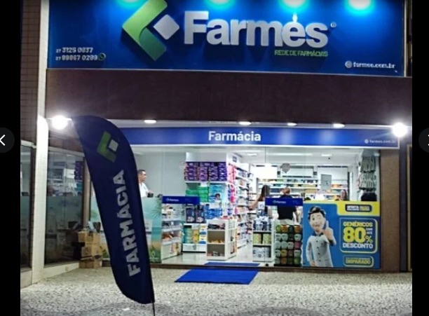
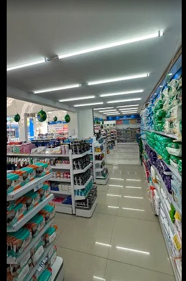
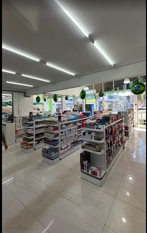
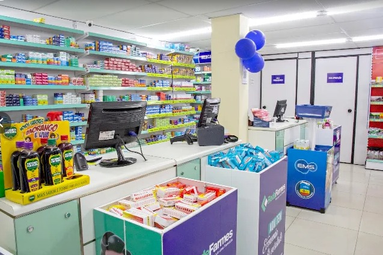

Medicamentos
Produtos farmacêuticos para uso humano, com praticidade para compras do dia a dia.
Cuidado, conveniência e atendimento próximo em uma loja ampla, organizada e conectada à rede Farmes.

Somos um grupo de lojas atuando na região metropolitana e litoral do Espírito Santo com 11 unidades filiadas à Farmes rede de farmácias desde 1998.
Ambiente amplo, sinalizado e preparado para compras rápidas.
Medicamentos, perfumaria, higiene pessoal e itens de conveniência.
Canal direto para pedidos, dúvidas e informações da unidade.
A página destaca o que o cliente procura primeiro: encontrar produtos, entender a estrutura da loja e falar com rapidez.
Produtos farmacêuticos para uso humano, com praticidade para compras do dia a dia.
Itens de higiene, beleza e bem-estar para completar sua rotina com conveniência.
Orientação próxima e comunicação direta para facilitar pedidos e informações da loja.
A estrutura apresenta a unidade com fotos reais, informações objetivas e chamadas diretas para o contato, sem perder o visual leve e moderno.


Fotos reais da fachada e do interior, com identidade visual inspirada no azul e verde da rede Farmes.

Informações cadastrais e localização reunidas em uma área simples de consultar.